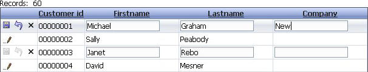

Row Edit Style - AllRows and RowOnDemand
Property name: 'Row edit style' ('Update Settings' pane)
A updateable grid can open with all rows in edit mode by selecting the 'AllRows' option. Selecting the 'RowOnDemand' option will open the grid in view mode. The row can be placed into edit mode either by clicking the 'Edit row' icon, or by double clicking on a field. If you double click on a field, initial focus will be on the field.
One edit row at a time
A related option is the 'One edit row at a time' property. If this is checked, it will allow only one row at a time to be in edit mode. Multiple rows can be placed in edit mode if this is not selected.
|  |
|
RowOnDemand with one edit row not selected. Two rows are in edit mode and a change has been made in the first row. |